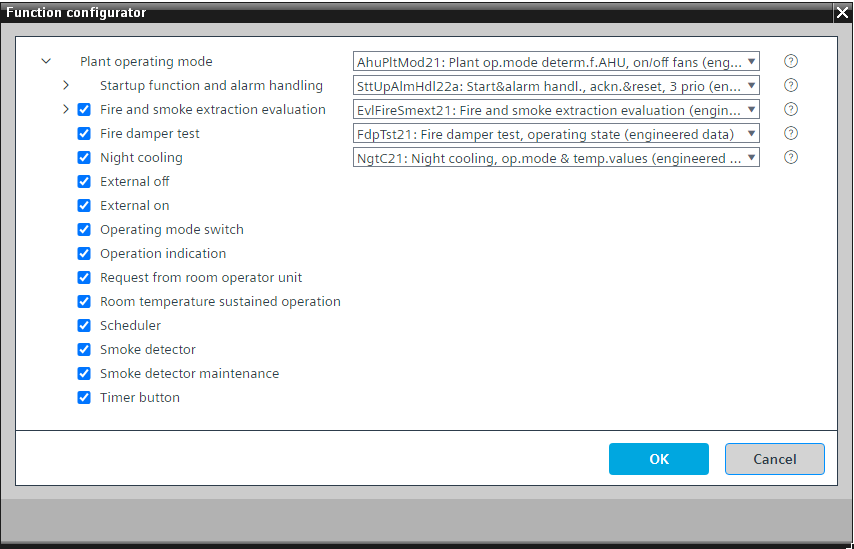

[AhuPltMod21] 空气处理机组的工厂运行模式确定，适用于/off 风机
Program block, name / node subtype: [AhuPltMod21] Plant operating mode determination for air handling unit, for on/off fans
Library hierarchy: Ventilation and air conditioning equipment
Family: AhuPltMod
项目树 | 图表 |
|---|---|
|
|
*SttUpAlmHdl21a 在系统版本 < 1.5 的控制器中 |


Configurator


程序块存储在没有 I/Os. 的库中 使用auto-create and auto-connect函数创建 I/Os 和 /or 将它们连接到接口块，例如 R_A、CMD_B。或者，从包含库中预定义 I/Os 的文件夹中取出 I/Os，并从工厂中取出 /or，并将它们连接到接口块。
通过考虑各种可能的来源（例如调度程序、手动操作、房间单元）来确定工厂运行模式。
适用于配备 1 速或受控风扇的设备。
Possible operating modes
运行模式 | 描述 |
|---|---|
离开 | 所有聚合均关闭（风门关闭、风扇关闭、线圈关闭、控制组件关闭）。 |
On | 所有聚合均已打开（风门打开、风扇运行、线圈打开、控制组件打开）。 |
开启，全速 | N/A |
夜间降温 | 一些聚合已打开（风门打开，风扇运行，线圈关闭，控制组件关闭，夜间冷却逻辑除外）。 |
通过送风排烟 | 某些聚合处于开启状态（供给部分中的阻尼器、风扇、盘管和控制元件开启，而抽气部分中的控制元件关闭）。所有输出均具有较高优先级。加热盘管的启动吹扫未激活。 |
通过废气排烟 | 某些机组处于开启状态（供给部分中的风门、风扇、盘管和控制元件关闭，而抽气部分中的风门和风扇开启）。所有输出均具有较高优先级。 |
排烟净化 | 所有聚合均已打开（风门打开、风扇运行、线圈打开、控制组件打开）。所有输出均具有较高优先级。加热盘管的启动吹扫未激活。 |
操作模式显示在 BACnet 上，具有多状态计算值“当前操作模式”，状态为“关闭”和“打开”。
程序中的一个参数被预设以防止设备运行。这对于测试数据点很有用。必须将其关闭才能启动设备。
"Startup function and alarm handling" controls the startup behavior of the plant after power-on.启动后有一个延迟，“DlySttUp”，大约 50 秒。 Do not change this delay.更改延迟“DlyOn”，以便每个工厂的延迟不同。这可确保工厂相继启动，并且不会使电气系统过载。还有来自工厂的所有故障和警报的收集和汇总。如果需要本地报警灯和/or 复位按钮，则可以选择替代方案。
该程序块具有以下可选功能：
Option: Fire and smoke extraction evaluation (3xAI)
读取火灾探测触点的状态以及通过送风排烟和通过排气排烟的可选触点的状态 (EvlFireSmext21)。
Option: Fire damper test
使用软件按钮或调度程序 (FdpTst21) 启动防火阀测试。当防火阀测试开始时，它会停止工厂。首先，它发送打开风门的命令。然后，在特定时间后，它会发送关闭风门的命令。
防火阀测试的评估在防火阀组中进行。 FdpGrp21 和 FdpGrp22 具有可选接口“防火阀测试”、测试评估逻辑以及显示测试结果的值对象。
Option: Night Cooling
如果满足以下条件 (NgtC21)，则启用“夜间制冷”操作模式：
- The plant is off.
- The "Night cooling" is enabled by its own scheduler.
- The outside temperature is not too low.
- The difference between the room temperature and the outside temperature is high enough.
- The room temperature is not below the heating setpoint.
如果不满足上述任何条件，则停止设备和“夜间冷却”运行模式。
Option: External off
可连接到用于关闭工厂的程序逻辑的接口。
Option: External on
可连接到程序逻辑以打开设备的接口。
它已准备好自动连接到 SplyAir21 中的“AhuReq”。为了与 DRA 协调，请在空气处理单元工厂中实例化 SplyAir21。
Option: Operating mode switch (1xMI=2xBI)
读取操作模式开关的状态，通常位于电气面板的前面，状态为“自动”、“关闭”和“打开”。
Option: Operation indication (1xBO)
命令灯（通常为绿色），如果设备正在运行，则该灯亮起；如果正在进行切换操作，则该灯闪烁。
Option: Request from room operator unit
可以从房间单元的设备图表中读取/written 的二进制简单过程值。它可以启动工厂。
Option: Room temperature sustained operation
如果室温低于“室温设定值持续模式”（通常远低于加热设定值，例如 12 °C），则打开设备，并以例如 2 K 的滞后关闭设备。
Option: Scheduler
类型为 MSCHED 的调度程序，其状态为“关闭”和“打开”，用于关闭和打开设备。
即使只有两个状态，这也是一个多状态调度程序（非二进制），如果项目需要，可以更轻松地扩展。
Option: Smoke detector (1xBI)
读取一个或两个烟雾探测器（串联）的状态并关闭设备。
Option: Smoke detector maintenance (1xBI)
读取一个或两个烟雾探测器的维护指示触点的状态。
Option: Timer button (1xBI)
读取计时器按钮的状态并在指定时间（可在程序中调整）内打开设备。
姓名 | 描述 | 类型 | 报警/通知类 | 趋势/类型 |
|---|---|---|---|---|
PrOpMod | Present operating mode | MCalcVal: Multistate calculated value | No | 是的，4 |
RsnPrOpMod | Reason for present operating mode | MCalcVal: Multistate calculated value | No | 是的，4 |
OpModMan | Manual operating mode selection | MCnfVal: Multistate configuration value | No | 是的，4 |
SttUpAlmHdl | Startup function and alarm handling | [SttUpAlmHdl22a] Startup & alarm handling, acknowledge & reset, 3 priorities | N/A | N/A |
姓名 | 描述 | 类型 | 报警/通知类 | 趋势/类型 |
|---|---|---|---|---|
EvlFireSmext | Fire and smoke extraction evaluation | N/A | N/A | |
FdpTst | Fire damper test | N/A | N/A | |
OpModSwi | Operating mode switch | MI：多态输入 | No | 是的，4 |
Sched | Scheduler | MSchedule: Multistate scheduler | No | No |
OpInd | Operation indication | BO：二进制输出 | No | 是的 |
NgtC | Night cooling | [NgtC21] Night cooling, based on the operating mode in the rooms and temperature values | N/A | N/A |
SmkDet | Smoke detector | BI：二进制输入 | 是的，4 | No |
SmkDetMntn | Smoke detector maintenance | BI：二进制输入 | 是的，8 | No |
SpTRSstdMod | Room temperature setpoint sustained mode | ACnfVal: Analog configuration value | No | No |
TmrBtn | Timer button | BI：二进制输入 | No | 是的，4 |
描述 |
|---|
Request from room operator unit |
External on |
External off |